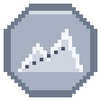

B5 · 第 2 关 · 挑战B5 · Tier 2 · challenge
山脊Ridge Trail
🔒 你的起点营地清单还没勾完，建议先回起点营地。计分规则：起点营地至少得 2 分，导师才给山脊计分。🔒 Your Base Camp checklist isn't complete yet — head back to Base Camp first. Scoring rule: your mentor scores the Ridge only once Base Camp has at least 2 points.
这一关，你从"找到"升级到"判断"：每张卡说出你信不信它、为什么；再真正走进一门外部课程看一看。全部写在同一份检索报告上。This tier moves you from finding to judging: say whether you trust each card and why; then step inside one external course. Everything goes on the same search report.
四个步骤Four steps
- 1
学LEARN 收紧渔网Narrow the net7 分钟7 min
引号、site:、filetype:、时间筛选——什么时候好使，什么时候别指望。（有空的话，用它们再检查一下你的三个来源——选做。）Quotes, site:, filetype:, time filters — when they help and when they don't. (If you have time, use them to re-check your three sources — optional.)
- 2
做MAKE 每张卡加一句"第一眼判断"A first-glance sentence for each card8 分钟8 min
在三张卡下面各写一句：Under each of your three cards, write one sentence:
第一眼看，我觉得它【可信 / 存疑】，因为——At first glance I find it [trustworthy / doubtful], because —理由来自"一眼三看"里的至少一看：谁在说 · 什么时候说 · 它引了谁。判断"存疑"同样满分——说得出为什么才是重点。Your reason comes from at least one of the three glances: who says it · when · what it cites. "Doubtful" earns full marks too — being able to say why is the point.
- 3
做MAKE 试学一门课，写两行小记Sample one course, write a two-line note18 分钟18 min
从你挑的两门里选一门，给它一整段约 15 分钟：介绍 → 大纲 → 第一课或预览视频。不用注册，公开内容就够。然后花 3 分钟在报告里写两行试学小记：Pick one of your two courses and give it one unbroken stretch of about 15 minutes: introduction → syllabus → first lesson or preview video. No registration needed — the open content is enough. Then take 3 minutes to add a two-line sampling note to your report:
课名：……
我的发现或感受：……（自己的话，不抄简介）Course: …
What I noticed or felt: … (your own words, not the blurb)课程页打不开？换另一门，或读菜单里的介绍，如实写明——同样达标。下周选课时，这则小记也可以拿来引用。Course page won't open? Switch courses, or read the menu's blurb and say so honestly — it meets the bar just the same. Next week's course choice can quote this note too.
- 4
交SUBMIT 更新报告，告诉导师Update the report, tell your mentor2 分钟2 min
在同一页报告上重新发布（链接不变，不用重新登记）。然后给导师发一封一句话的邮件，主题写：B5 已更新 · 山脊 · 你的化名——导师收到才知道要给新的一关计分。Republish the same report page (same link, nothing new to register). Then send your mentor a one-line email with the subject B5 updated · Ridge · your pseudonym — that is how your mentor knows to score the new tier.
公开学习者：不用发给导师——把更新后的链接再发进自己的邮箱，用量规自评山脊这一行。Open learners: no mentor email — send the updated link to your own inbox again and self-score the Ridge row with the rubric.
山脊清单Ridge checklist
新内容可以评分了（公开学习者：照量规自评）。山顶就在眼前。Your new work is ready to be scored (open learners: self-score with the rubric). The summit is in sight. 冲顶 →Go for the top →
常见问题FAQ
我的三个来源说法互相矛盾，怎么办？My three sources contradict each other — now what?
恭喜，这不是失败，是本周最有价值的发现——把矛盾如实写进报告，正是"记录来源"的意义所在：别人能沿着你的三张卡自己去看、自己去判断。你不必当裁判；用"一眼三看"说出你暂时更信哪个和为什么，就已经超额完成本周。真正的裁判功夫（追踪说法的源头、横向对照）第二学期有一整个单元来练。
Congratulations — that is not failure but the week's most valuable find. Write the contradiction into the report honestly; it is exactly what recording sources is for: others can follow your three cards, look for themselves and judge for themselves. You need not referee; saying which one you trust for now and why, by the three glances, already exceeds this week's bar. The real refereeing craft — tracing a claim to its origin, reading laterally — gets a whole module of its own in Semester 2.
试学的课程页打不开。The course I want to sample won't open.
老朋友了——第 4 周你就见过它。菜单里的外部链接都标着"待实测"，打不开不是你的错。国际平台（Coursera、edX 等）并不是在每个地方都打得开——拿不准就先从中文平台的课试起：第 6 门（微软，简体中文，部分内容不用账号）和第 5、10、11 门（中国大学MOOC，介绍页不注册也能看）。按顺序补救：① 换菜单里另一门；② 都打不开，把菜单页切成英文，读每门课自带的介绍（第 4 周的兜底老路），试学小记里如实写"外部页面未能打开，读的是菜单内介绍"。两条路同样达标，而且你记下的"打不开"课程名正是课程开课前实测要用的第一手数据——导师每周都在收集。（公开学习者：菜单页顶部的"待实测"说明写着"打不开请邮件告诉我们"——同一条回路。）
An old acquaintance — you met it in Week 4. Every external link on the menu is marked "to verify"; a dead page is not your failure. The international platforms (Coursera, edX and friends) do not open from everywhere — when unsure, start with the Chinese-platform courses: #6 (Microsoft, Simplified Chinese, partly usable without an account) and #5, #10, #11 (icourse163, whose introduction pages open without registering). Recover in order: ① switch to another course on the menu; ② if none opens, flip the menu page to English and read each course's own blurb (Week 4's fallback road), noting honestly "external page unreachable; menu blurb read". Both routes meet the bar — and the course names you record as unreachable are precisely the first-hand data the pre-launch access tests need; mentors collect them weekly. (Open learners: the menu page's top "to verify" note asks you to email the course about any page that fails — the same loop.)
试学要不要注册账号？Does sampling mean registering for accounts?
不强制。介绍页、课程大纲、预览视频这些公开内容，足够撑起 约 15 分钟的试学。真想登进去看更多：先告诉家长（外部课程学习线的约定），然后用第 5 周的手艺——邮箱注册、强而唯一的密码短语、选填留空。菜单的"注册 · 手机号"一列写明了每门课要什么，注册前看一眼。
Not required. Introduction pages, syllabi and preview videos carry a 15-minute sample comfortably in the open. If you genuinely want inside: tell your parents first (the external-course thread's standing agreement), then use Week 5's craft — email sign-up, a strong unique passphrase, optional fields left empty. The menu's sign-up column states what each course asks; read it before registering.
下一周：B6 我的数字工作台 · 第 7 周 →Next week: B6 My Digital Workspace · Week 7 →